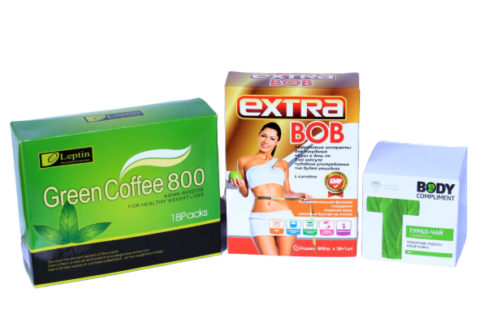

Extra-bob.now.sh
Extra-bob.now.sh

1. Рекомендуется употреблять людям с жирной поясницей или большим животом. 2. Людям, страдающим ожирением из-за рождения ребенка или ожирением из-за излишнего питания. 3. Людям, страдающим ожирением из-за избыточной пищи, употребления излишних жирных продуктов каждый день, отсутствия спорта.
1. Очищает организм от шлаков и от токсинов. 2. Нормализует метаболизм. 3. Стимулирует переработку подкожного жира. 4. Помогает регулировать аппетит. 5. Придает бодрости и повышает работоспособность.
1-2 раз в день по 1-капсуле (употреблять до завтрака или желательно после завтрака за 1,5 часа) Противопоказания: Не рекомендуется употреблять детям, подросткам, беременным женщинам или кормящим, людям с болезнью сердца, повышенным давлением крови, людям с историей болезнью инсульта и с болезнью почек.